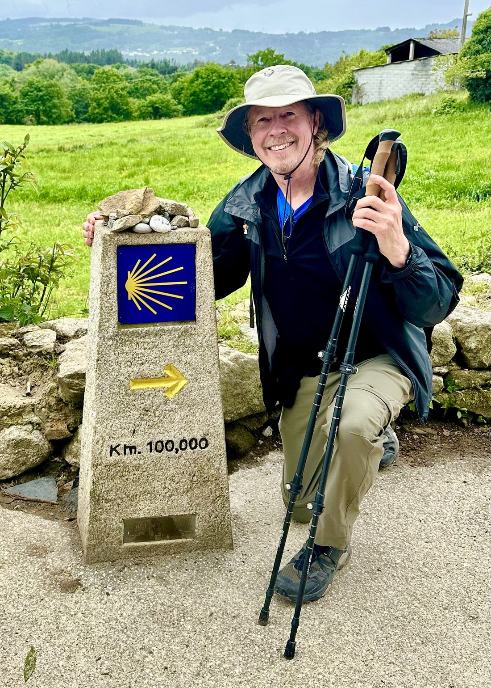
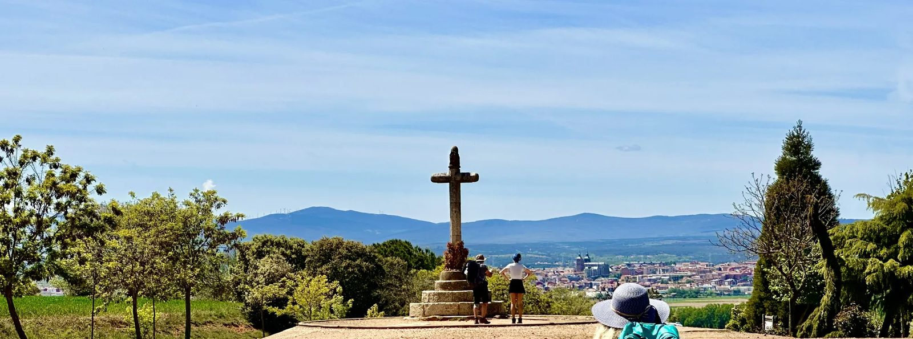
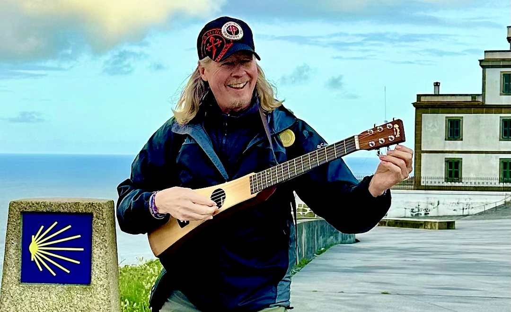
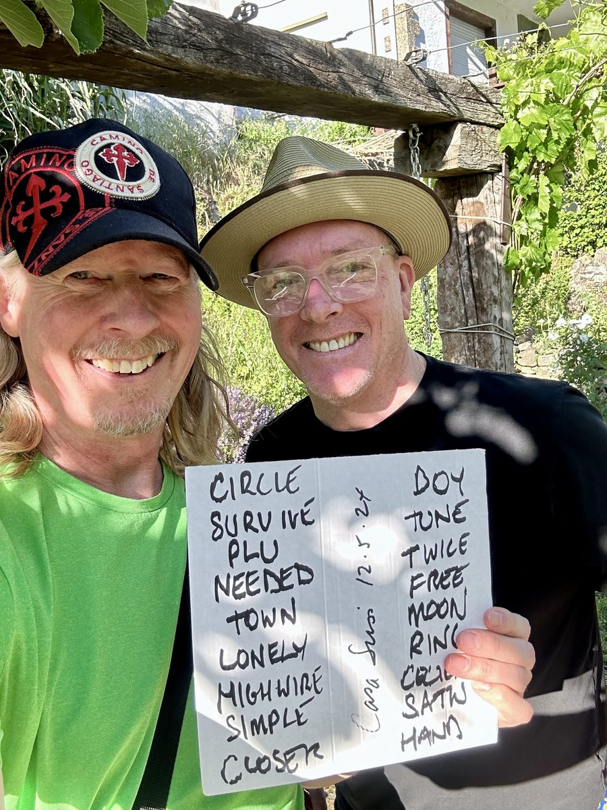

One to one coaching with Dave Hall
Four weeks of one to one coaching, on whichever side of the Camino you are standing.

The whole road
For Wilgrims. Wilgrim Ready: Your 4-Week Camino Prep. Four weeks with me before you fly.
$297 four calls, paid up front
See the four weeksYours to walk. Follow the yellow arrows. Nobody can do this part for you, and nobody should.
For Pilgrims. Four Weeks to Homecoming. Four weeks with me once you are back.
$297 four calls, paid up front
See the four weeksFor Wilgrims · before you walk
The Camino is an encounter with yourself. Packing lists will not prepare you for that.
Wilgrim Ready: Your 4-Week Camino Prep takes you through the four movements of my CaminoLife MAPS Framework™, one a week, so that when you take your first step you are not walking blind. Just you and me, on your schedule.
On the Camino Francés, a day past Astorga, pilgrims reach the Cruz de Ferro and lay down a stone they carried from home. Whatever route you walk, part of getting ready is knowing what your stone is.

Route, logistics, and practical readiness. Clarity instead of rumination. Why you are going, held with a clear head.
Naming what you feel before the road names it for you. Shame and guilt, and the difference. What you are carrying that is not in the pack.
Training, boots, health, and packing light. Learning to treat your body as a teacher, not an obstacle.
Spiritual IQ and Spiritual EQ. Where your deepest wound might be your deepest gift. The questions you will carry onto the road.
$297 Wilgrim Ready, four weekly calls, paid up front.
Book a free 15-minute call
For Pilgrims · after you walk
You are back, but you are not home yet.
For weeks you had one job. Walk. Eat. Sleep. Walk again. Something came loose out there, and you felt it. Maybe it was grief you had been carrying for years. Maybe it was a decision you had been avoiding. Maybe it was just the quiet, or what the still small voice of God whispered to you through the Eucalyptus leaves.
Then you flew home. The laundry, the inbox, the same kitchen. Within a month the Camino starts to feel like a holiday you once took, and the thing that came loose quietly settles back into place.
That is not a failure of will. It is what happens to every pilgrim who walks back into an unchanged life with no plan for the thing they are carrying. The walk opens it. The homecoming is where it either takes root or closes over.
We start with what you wrote on your intake form and walk through both frameworks, my CaminoLife MAPS Framework™ and my CaminoLife WALKS Framework™. You leave with one daily rhythm you will actually keep: the footsteps mantra, a word paired with every step.
What is still sitting on you from before the walk. The Camino surfaced it. This is where we find out exactly what it is, and stop trying to fix it long enough to name it.
Who in your life needs to hear what changed, and how to say it. We script that conversation before you have it, so it goes the way you mean it to.
Not another pilgrimage. The ordinary one: work, family, the thing you have been avoiding. We map it the way you would map a stage. Then you write your own one-sentence answer to what the Camino did to you, and you lay the stone down.
$297 Four Weeks to Homecoming, four weekly calls, paid up front.
Book a free 15-minute callHow it works
Your coach
I am Dave Hall. Four Caminos: the Norte in 2019, the Portuguese Coastal in 2023, Leon to Santiago in May 2024 as traveling hospitalero on Dan Mullins' Magical Musical Camino, and the Litoral and Spiritual Variant with Dan in 2025.
I did not come home from the first one well. I know exactly how it goes when you walk 500 miles, feel something crack open, and then let an ordinary November close it back up. My book, Walking Toward Fire, is the honest version of that story.
I became a Certified Life Coach so I could offer you the coaching I wish someone had offered me, before I flew out and in the weeks after I got off the plane.

Before you ask
If you have not walked yet, or you are walking soon, you are a Wilgrim, and Wilgrim Ready is for you. If you are back, you are a Pilgrim, and Four Weeks to Homecoming is for you. If you are not sure, that is what the free call is for.
Yes. Before you go and after you get back is the whole arc, and some pilgrims want someone with them on both sides of it. Ask about it on the free call.
No. The cohort is a small group that meets together on Zoom. Wilgrim Ready is one to one: just you and me, on your schedule.
There is no window. Fresh off the plane is good, because it is all still loud. Three years out is also good, because by then you know which parts stayed. If you are still thinking about it, it is not too late.
No. Two of the five movements are spiritual, and I am a person of faith, so I will not pretend otherwise. But this is your pilgrimage, not mine. Plenty of people do this work without sharing my beliefs and get everything out of it.
Then you stop at the end of week two and I refund the rest. You do not have to justify it. I would rather give the money back than keep someone in four weeks that are not helping.
No, and it is not a substitute for it. This is coaching: structured, practical, built around what you do next. If what surfaces needs a therapist, I will say so plainly and help you find one.
You tell me where you are walking, or where you walked, and what you are carrying. I tell you honestly whether four weeks with me would help. If the answer is no, I will say that too.
Ultreia
Some griefs can't be talked through. They have to be walked through.
Four weeks, $297, either side of the walk. Stop at week two and I refund the rest.